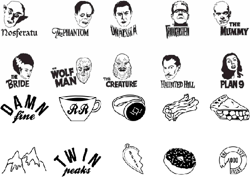
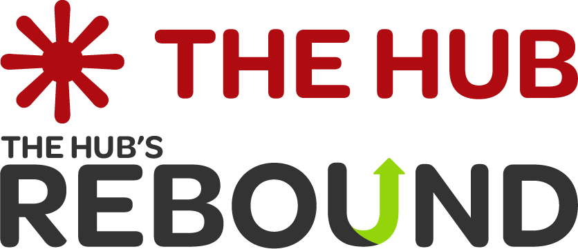
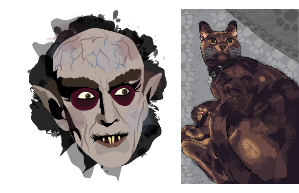
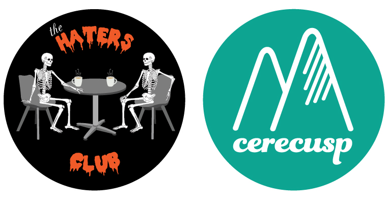
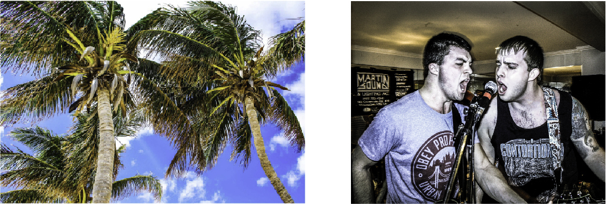

about
Chelsea Smith
Ottawa, Ontario, Canada
Multi-media artist, graphic designer
Home haunter, makeup artist, Twitter personality, playlist curator
Hi! Welcome to my online portfolio. I have a passion for art and design. I have been doing freelance design work for almost a decade. I also have experience working for companies in marketing, e-commerce, and administrative departments as well. Even in my spare time, most of my hobbies reflect my artistic inclinations. I’ve always been interested in all things creative, from painting and sketching all the way to elaborate outdoor installations for Halloween.
I have expertise in illustration, marketing, branding, and photography, but my skill sets stretch out to many other branches within graphic design as well. More detailed physical and digital mixed media portfolios are available upon request.
work
-

Silver Screams & Dueling Mountains, glyph sets, 2015 & 2016.
Tools used: Adobe Illustrator, Glyphs
These are two sets of downloadable, fully functioning dingbats/glyphs that I created. I first illustrated these by hand, then brought them in to Illustrator to digitally render. Once the icons were complete, I then used the Glyphs app to make them function as a font set. Silver Screams are dingbats based off main characters from classic early 20th century horror films. Dueling Mountains are icons based off of imagery from the '90s cult TV show Twin Peaks. These sets are available for purchase.
-

The Hub & Rebound, complete rebrand, 2018.
Tools used: GitHub, Atom, Adobe Photoshop, Illustrator, InDesign
For this project, I was tasked with rebranding two initiatives from the Almonte Community Coordinators. Working with a team of other talented designers, we completely revamped the companies' branding. We did a complete upheaval of their branding guidelines, marketing, online presence, website, etc. I have worked with other company rebrands, but this is the most recent example. A more in-depth case study of the project is available.
-

NosferAI & Georgie, digital painting/illustration, 2014 & 2018.
Tools used: tempera paint, Wacom tablet, Adobe Photoshop, Illustrator
These pieces are two illustrations I created. For the first piece, NosferAI, I did an original illustration of the Nosferatu character from the German vampire movie of the same name. The second piece, Georgie, is a rendering of a photograph I took of my cat. I created a custom vector brush set by painting various brush strokes and patterns with tempera paint, then scanned them into Adobe Photoshop. Once digitally rendered, I imported the set into Illustrator to finish the process and create a downloadable brush set. I then recreated my photograph in Illustrator for the general outline. Once the outline was layed out, I used my custom brush set for fine detailing to give my illustration a more hand-painted effect. The brush set is available for purchase.
-

Haters Club Podcast & Cerecusp, logos, 2018 & 2016.
Tools used: Adobe Illustrator
I have worked on several logos over the years for various clients, ranging from rock bands to professional companies. The Haters Club is a pop culture podcast that I also created and co-hosted. Cerecusp is for a health and wellness app concept I created, for mental health management. For both of these I worked mostly in Adobe Illustrator, with preliminary sketches and concepts done by hand. These are just highlights of some of my logo work that I feel best displays the range of styles I can work within.
-

Nassau & Inhibitors, photography, 2013.
Tools used: Canon Rebel DSLR, Adobe Bridge, Lightroom, Photoshop
I have a passion for digital photography and photo editing. I have done several photoshoots for clients as well as landscape photography. The first photograph I took while travelling in Nassau, Bahamas. The second photo was done for promo for Inhibitors, a metal band from Ottawa. I took the photograph during a live performance of theirs. Both photos were brought into Adobe Bridge, Lightroom, and Photoshop for editing. I do have a complete separate photography portfolio available for viewing, upon request.
contact
-
Chelsea Smith
613-400-7579
info@chelseasmith.ca
Operating out of Ottawa, Ontario.